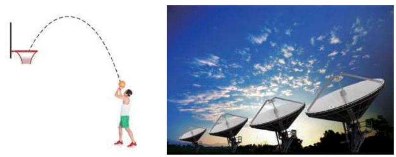
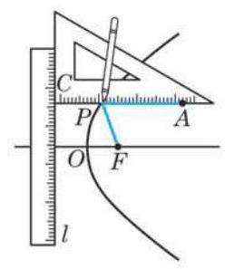
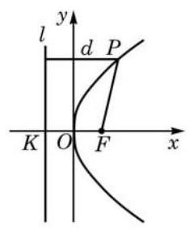
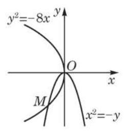

抛物线是一种常见的曲线, 例如喷泉中喷出的水珠、投出的篮球所经过的轨迹都是抛物线. 抛物线的用途很广泛, 在太阳灶、探照灯、雷达天线、卫星天线、射电望远镜、工程建筑等工程技术中都有它的身影, 体现了抛物线在光学、力学等方面的独有特性.

与椭圆、双曲线一样, 我们也通过操作先画出一段抛物线, 然后建立平面直角坐标系推导抛物线方程. 如图 2-4-1, 将一把直尺在一个平面上固定不动. 另取一块三角板,设直角顶点为 ,并在它的一条直角边上取定点 . 再取一条细线使它的长度正好等于 的长. 将这条细线的一端固定在三角板的点 ,另一端固定在同一平面上的点 . 用一支铅笔靠着细线将它绷紧，当三角板的另一条直角边靠着直尺滑动时,铅笔尖 画出了一段曲线. 观察这段曲线的生成过程可以发现,如果把直尺看作一条定直线 ,那么动点 到直线 的距离始终等于它到定点 的距离.

图 2-4-1
为什么需加条件 “ 不在 上”?
下面根据抛物线的定义来求它的方程.

图 2-4-2
如图 2-4-2,取抛物线的顶点为原点 ,以向量 的方向为 轴的正方向,建立平面直角坐标系.
设焦点到准线的距离 ,则焦点 的坐标是 ,准线 的方程为 .
设 是抛物线上任意一点,点 到 的距离为 ,则
?
这里, 还可以怎样建立平面直角坐标系? 相应的抛物线方程又具有怎样的形式?
由抛物线定义知 ,于是有
将上式两边平方, 并化简, 得
从这个推导过程可以知道,抛物线上任意一点 的坐标 都是上述方程的解. 反过来, 可以证明以上述方程的解为坐标的点, 都在这条抛物线上 (只需将上述推理过程反过来推演即可).
我们学过二次函数 0)的图像, 可以看出, 当 时,此图像是一个具有方程 的抛物线. 当 不全为零时, 二次函数的图像是这个抛物线的平移.
形如 的方程叫作抛物线的标准方程,它所表示的抛物线的顶点置于坐标原点,且具有焦点 和准线 . 我们还注意到,这条抛物线上任何一点的横坐标 , 所以抛物线位于 轴及其右侧; 当 增大时,抛物线上相应点的纵坐标 的绝对值也随着增大. 可见,此抛物线从顶点出发的上下两部分随着 的增大,在 轴的正方向 (即坐标系的右方) 形成了不再封闭的开口(我们形象地称此抛物线的“开口向右”).
仿照上述过程, 如果将抛物线的顶点仍置于坐标原点, 但将焦点分别置于 轴的负半轴、 轴的正半轴和负半轴,就可以相应地得到抛物线的另外三种标准方程: 与 . 其中,后两种形式稍作变形就是我们所熟知的二次函数的表达式.

图 2-4-3